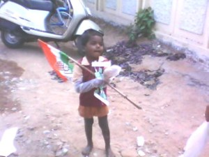

एकाद दिन पहले; कई दिनों के बद लवलीजी से चैट हो रही थी। अचानक लवलीजी ने कहा आपको पंकज बैंगानीजी और गुड़िया (डॉ गरिमा) खोज रहे हैं। लवलीजी ने पंकजभाई के ब्लॉग की उस पोस्ट का लिंक बताया जिसमें मेरे सहित कुछ और ब्लॉगर के गुमशुदा होने की खबर प्रकाशित हुई थी।
यह पोस्ट पढ़ कर बढ़िया लगा। अहसास हुआ कि आज भी पुराने साथी हैं जो याद करते हैं, चाहते हैं कि कुछ ना कुछ ब्लॉग पर लिखता रहूँ।
दरअसल एकाद महीने पहले स्कूल से लौटते समय चिरंजीवी हर्षवर्धन अपने पाँव को तुड़वा बैठे। (Hairline factrure in Hip bone)। यह दुर्घटना हुई शनिवार की शाम। पाँव में सूजन ना देख हमारे रिश्तेदारों का सुझाव था कि मोच होगी, हाड़वैद ( हड्डी के देशी , बिना डिग्री के डॉक्टर) के पास ले चलते हैं।
डॉक्टर आई मीन हाड़वैद ने देखते ही कहा, एक्सरे निकलवाना पड़ेगा। फिर एक्सरे वाले के पास भागे, एक्सरे निकल्वा कर फिर हाड़वैद के पास गये। उसने कहा फेक्चर है लेकिन मैं पट्टी बांध देता हूँ। मैने साफ मना कर दिया, अगर फेक्चर है तो मैं डॉक्टर की सलाह के बिना कोई पट्टी नहीं बंधवाऊंगा।
हमारे रिश्तेदार, जन पहचान वाले लोग बहुत नाराज हुए क्यों कि मैने हाड़वैद से पट्टी बंधवाने की उनकी बात नहीं मानी थी। खैर अगले दिन डॉक्टर ने देख भी लिया , और फेक्चर की बजाय क्रेक होने की वजह से प्लास्टर बांधने की बजाय बेड रेस्ट करने को कहा। दीवाली भी हर्ष की वॉकर के सहारे ही गुजरी। पटाखे ना चला पाने की मायूसी भी उनके चेहरे पर साफ दिखी।
इन सब झंझटों के चलते ब्लॉग की दुनिया से एकदम दूरी बन गई, पहले तो समय ही नहीं मिलता था, और डेढ़ दो महीने के बाद जब थोड़ा समय मिलने लगा तो क्या लिखूं… के चक्कर में कुछ लिखना ही नहीं हो पाया।
अब हर्ष भी एकदम ठीक हो चुके हैं… समय भी मिलने लगा है देखते हैं वापसी होती है या नहीं।
पुनश्च: पिछले दिनों एक ऐसा काम कर दिया जिसके लिए सालों से बचता रहा था, और वह था मोबाईल फोन खरीदना। आजकल फोन से बातें कम फोटो ज्यादा खींचे जा रहे हैं। कुछ फोटो यहां दे रहा हूँ।


दूसरे चित्र में यह एक प्रसिद्ध शहर का रेल्वे स्टेशन है, मेटल डिटेक्टर भी लगा है पर वहाँ खड़े रहने वाली पुलिस हमेशा नदारद रहती है। पहले गोल घेरे में एक महिला मेटल डिटेक्टर से अन्दर जा रही है, वहीं दूसरे चित्र में दो युवक एक हेण्डबेग ले कर आराम से डितेक्टर की बजाय बाहर आने वाले रास्ते से अन्दर जा रहे हैं।